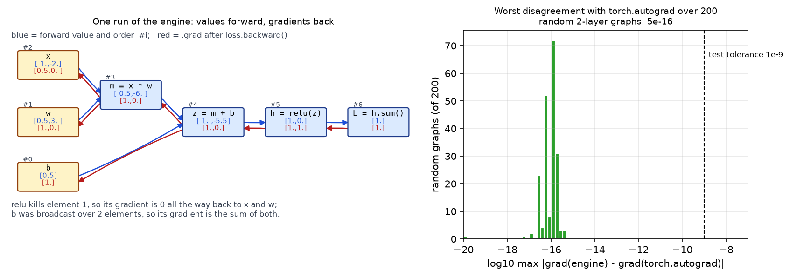

Building an autograd engine¶
Why this matters at staff level. "How does PyTorch's autograd actually work?" is a standard ML-depth question, and "build a tiny autograd" is a favourite take-home and live-coding task for infra-leaning roles. The strong signal is a working engine with tensor (not scalar) values, correct broadcasting in the backward pass, a topological sort, and the ability to say precisely how PyTorch (
Function,ctx, dynamic graph,requires_grad,no_grad, in-place checks, hooks) and JAX (functionalgrad,jit,vmap) differ from what you built and why.
TL;DR: the interview card¶
- A
Tensorholdsdata,grad, the parent tensors_prevand a closure_backwardthat adds this node's VJP into the parents'grad. backward(): topological sort of the DAG from the root; seedroot.grad = 1; call each node's_backwardin reverse order. Gradients accumulate (+=) because a tensor can feed several ops.- Every op is: compute output data; capture inputs in a closure; define
_backwardusing the local derivative; return the new node. - Broadcasting forward \(\Rightarrow\)
unbroadcastbackward: sum over prepended axes, then sum withkeepdimsover axes that were size 1. - Matmul: \(\bar A = \bar C B^\top\), \(\bar B = A^\top \bar C\) (batched via
swapaxes(-1,-2)+unbroadcast). - Reductions:
sumbroadcasts the upstream gradient back;meanissumtimes \(1/n\). - PyTorch differences: C++ engine,
Function.applywith actxthat saves tensors, a dynamic graph rebuilt per iteration,requires_gradpropagation,.detach()/no_grad/inference_mode, version counters for in-place safety,retain_graph, tensor and module hooks, gradients only on leaves by default. - JAX differences: no mutable
.grad;grad(f)is a function transformation on pure functions;jittraces to XLA;vmapvectorises;jvpgives forward mode; state is threaded explicitly. - Tested against
torch.autogradon random graphs to \(10^{-9}\):tests/test_nn_autograd.py.
1. Intuition first¶
Chapter 2 wrote a backward per layer and a hand-ordered loop. An autograd engine
pushes that one level down: a backward per primitive op (add, mul, matmul, exp,
…) and an automatic ordering. The user writes only the forward expression. Evaluating it
builds the graph as a side effect.
Take \(L = \sum \big(\mathrm{relu}(XW + b)\big)\). Evaluating this with our Tensor produces
four nodes in order: t1 = X @ W, t2 = t1 + b, t3 = t2.relu(), L = t3.sum().
Each node remembers its parents:
flowchart LR
X((X)) --> M[t1 = X @ W]
W((W)) --> M
M --> A[t2 = t1 + b]
b((b)) --> A
A --> R[t3 = relu t2]
R --> S[L = sum t3]L.backward() sets \(\bar L = 1\) and visits S, R, A, M in that order. S's closure
broadcasts \(\bar L\) to t3's shape; R's multiplies by the mask; A's passes \(\bar{t_2}\)
to t1 unchanged and sums it over the batch into b.grad (the unbroadcast);
M's computes \(\bar X = \bar{t_1} W^\top\) and \(\bar W = X^\top \bar{t_1}\). The parameter
gradients appear in W.grad and b.grad without anyone having written a
"Linear.backward".

Left: the graph of L = (x*w + b).relu().sum() after one loss.backward(), with every
number taken from a real run of mlbook.nn.autograd. Blue is the forward value and the
node's position #i in the topological order; red is .grad. Element 1 is negative
before the ReLU, so its gradient is zero back through w and x; b was broadcast over
both elements, so its gradient is the sum of the two. Right: the largest disagreement
with torch.autograd over 200 random two-layer graphs is 5e-16, ten million times
tighter than the 1e-9 the tests demand. Reproduce with
python figures/part03_autograd_modes.py.
Why closures? The backward of an op needs values from its forward (for mul,
the other operand; for exp, the output; for relu, the input). A closure
captures those by reference, which is both the simplest implementation and exactly
what PyTorch's ctx.save_for_backward formalises.
Why a topological sort? A node's _backward reads out.grad, which must be
complete, every downstream consumer must have added its contribution first. Reverse
topological order guarantees that. Executing in "creation order reversed" is only
correct if creation order was itself topological, which it is for eager execution
but not in general (e.g. graphs assembled out of order), so the engine sorts.
2. The math¶
An engine is correct if, for each primitive \(y = f(x_1, \dots, x_m)\), its closure implements the VJPs \(\bar x_i \mathrel{+}= \bar y\cdot \partial y/\partial x_i\) with correct shapes. The ones this engine implements:
| Op | Forward | VJP(s) |
|---|---|---|
| add | \(y = a + b\) | \(\bar a \mathrel{+}= \mathrm{unbc}(\bar y, a)\), \(\bar b \mathrel{+}= \mathrm{unbc}(\bar y, b)\) |
| mul | \(y = a\odot b\) | \(\bar a \mathrel{+}= \mathrm{unbc}(\bar y\odot b, a)\), \(\bar b \mathrel{+}= \mathrm{unbc}(\bar y\odot a, b)\) |
| pow (scalar \(c\)) | \(y = a^c\) | \(\bar a \mathrel{+}= c\,a^{c-1}\odot\bar y\) |
| matmul | \(Y = AB\) | \(\bar A \mathrel{+}= \mathrm{unbc}(\bar Y B^{\top}, A)\), \(\bar B \mathrel{+}= \mathrm{unbc}(A^{\top}\bar Y, B)\) |
| sum over axes | \(y = \sum_{\text{axes}} a\) | \(\bar a \mathrel{+}= \mathrm{broadcast}(\mathrm{expand}(\bar y), a)\) |
| exp / log | \(e^a\), \(\log a\) | \(\bar a \mathrel{+}= y\odot\bar y\); \(\bar a \mathrel{+}= \bar y / a\) |
| relu / sigmoid / tanh | \(\bar y\odot 1[a>0]\); \(\bar y\odot s(1-s)\); \(\bar y\odot(1-t^2)\) | |
| log_softmax (axis) | \(\ell = a - \mathrm{lse}(a)\) | \(\bar a \mathrel{+}= \bar\ell - p\odot\sum_{\text{axis}}\bar\ell\) |
| softmax (axis) | \(p\) | \(\bar a \mathrel{+}= p\odot(\bar p - \sum_{\text{axis}} \bar p\odot p)\) |
| reshape / transpose | reshape back; transpose by the inverse permutation |
Two of these deserve a derivation.
unbroadcast. If \(a\) has shape \(s\) and was broadcast to \(s'\) before an
elementwise op, then in the forward pass each element of \(a\) was copied to a set
\(S\) of positions in the \(s'\)-shaped intermediate. The chain rule sums over \(S\)
(chapter 2, §2.5). Concretely: NumPy broadcasting (i) prepends axes of size 1 on the
left until ranks match, then (ii) stretches any size-1 axis. Undoing (i) is summing
over the leading extra axes; undoing (ii) is summing with keepdims=True over each
axis that is 1 in \(s\) but not in \(s'\).
log_softmax VJP. \(\ell_k = a_k - \log\sum_j e^{a_j}\), so
\(\partial \ell_k/\partial a_i = 1[i=k] - p_i\). For upstream \(\bar\ell\):
\(\bar a_i = \sum_k \bar\ell_k(1[i=k] - p_i) = \bar\ell_i - p_i\sum_k \bar\ell_k\). With
\(\bar\ell = -\mathrm{onehot}(y)/N\) this evaluates to \((p - y)/N\), so two primitives are
enough to express the fused cross-entropy gradient.
Correctness of the traversal. Let \(v_1, \dots, v_n\) be a topological order of the
DAG with \(v_n\) the root. Claim: after processing \(v_n, v_{n-1}, \dots, v_{k+1}\), the
gradient stored on \(v_k\) equals \(\partial L/\partial v_k\). Proof by induction: \(v_k\)'s
gradient is \(\sum_{c \in \mathrm{children}(v_k)} \bar c\,\partial c/\partial v_k\), every
child \(c\) has a larger index (topological order), so all of those closures have
already run and each added exactly its term. This is why += is mandatory and why
each node's closure must run exactly once.
3. Implementation¶
src/mlbook/nn/autograd.py, about 300 lines. The skeleton:
class Tensor:
def __init__(self, data, requires_grad=False, _children=(), _op=""):
self.data = np.asarray(data, dtype=np.float64) # any shape
self.grad = np.zeros_like(self.data) # same shape as data
self.requires_grad = requires_grad
self._prev = tuple(_children) # parents in the DAG
self._op = _op
self._backward = lambda: None # leaf: nothing to propagate
def backward(self):
assert self.data.size == 1, "backward() needs a scalar root; call .sum() first"
order = _topological_order(self)
self.grad = np.ones_like(self.data) # dL/dL = 1
for node in reversed(order): # children before parents
node._backward()
The root must be a scalar because we seed with \(\bar L = 1\); for a non-scalar output
you would seed with an explicit cotangent (PyTorch's backward(gradient=...)).
def unbroadcast(grad, shape):
while grad.ndim > len(shape): # axes that broadcasting prepended
grad = grad.sum(axis=0)
for axis, size in enumerate(shape): # axes that were 1 and got stretched
if size == 1 and grad.shape[axis] != 1:
grad = grad.sum(axis=axis, keepdims=True)
return grad # shape == shape
unbroadcast is the single most important function in the file; it is what lets
x + b with b of shape (d,) produce the right b.grad of shape (d,).
def __add__(self, other):
other = _as_tensor(other)
out = Tensor(self.data + other.data, _children=(self, other), _op="add") # broadcast shape
def _backward():
self.grad += unbroadcast(out.grad, self.shape)
other.grad += unbroadcast(out.grad, other.shape)
out._backward = _backward
return out
def __mul__(self, other):
other = _as_tensor(other)
out = Tensor(self.data * other.data, _children=(self, other), _op="mul") # broadcast shape
def _backward():
self.grad += unbroadcast(other.data * out.grad, self.shape)
other.grad += unbroadcast(self.data * out.grad, other.shape)
out._backward = _backward
return out
Every op follows this template: compute, build a node with parents, define the
closure, attach, return. sub, neg and truediv are composed from add, mul
and pow so they need no closures of their own, a small example of the "few
primitives, many derived ops" design that real frameworks use.
def __matmul__(self, other):
out = Tensor(self.data @ other.data, _children=(self, other), _op="matmul") # (..., n, p)
def _backward():
bt = np.swapaxes(other.data, -1, -2) # (..., p, m)
at = np.swapaxes(self.data, -1, -2) # (..., m, n)
self.grad += unbroadcast(out.grad @ bt, self.shape) # (..., n, m)
other.grad += unbroadcast(at @ out.grad, other.shape) # (..., m, p)
out._backward = _backward
return out
swapaxes(-1, -2) is the batched transpose; unbroadcast handles a weight that was
shared across a batch of matmuls (e.g. (4, 2, 3) @ (3, 5)), summing its gradient
over the batch, the same bias rule again.
def sum(self, axis=None, keepdims=False):
out = Tensor(self.data.sum(axis=axis, keepdims=keepdims), _children=(self,), _op="sum")
def _backward():
g = out.grad
if not keepdims and axis is not None:
g = np.expand_dims(g, axis) # restore reduced axes as size 1
self.grad += np.broadcast_to(g, self.shape) # copy gradient to every summed element
out._backward = _backward
return out
def log_softmax(self, axis=-1):
shifted = self.data - self.data.max(axis=axis, keepdims=True) # (..., K)
logp = shifted - np.log(np.exp(shifted).sum(axis=axis, keepdims=True)) # (..., K)
out = Tensor(logp, _children=(self,), _op="log_softmax")
def _backward():
p = np.exp(logp) # (..., K)
self.grad += out.grad - p * out.grad.sum(axis=axis, keepdims=True)
out._backward = _backward
return out
sum's backward is broadcasting, the exact mirror of unbroadcast. log_softmax is
a fused primitive rather than exp/sum/log composed, for the numerical reason
in chapter 2: the composed version would compute log of an underflowed sum.
def _topological_order(root):
"""Iterative DFS post-order: every node appears after all of its inputs."""
order, visited, stack = [], set(), [(root, False)]
while stack:
node, expanded = stack.pop()
if expanded:
order.append(node); continue
if id(node) in visited:
continue
visited.add(id(node))
stack.append((node, True))
for child in node._prev:
if id(child) not in visited:
stack.append((child, False))
return order
Iterative rather than recursive so a 1000-op graph does not hit Python's recursion limit. The post-order of a DFS is a topological order; reversing it gives the backward schedule.
def cross_entropy(logits, y):
n, k = logits.shape
onehot = np.zeros((n, k)); onehot[np.arange(n), y] = 1.0 # (N, K)
logp = logits.log_softmax(axis=-1) # (N, K)
return -(logp * Tensor(onehot)).sum() * (1.0 / n) # scalar
With the engine, the loss is four ops and needs no backward of its own, the whole point.
How you'd test it. Build the same random graph in this engine and in PyTorch
(float64), call backward() on both, and compare every leaf's gradient to
atol=1e-9. tests/test_nn_autograd.py does this for: a two-layer MLP with
cross-entropy; a deep elementwise chain with broadcasting; softmax / log-softmax /
reshape / transpose / mean; batched matmul with a broadcast weight; plus two
graph-structure checks (a tensor used twice accumulates; a diamond graph is ordered
correctly) and one op-by-op parametrised sweep.
Full implementation: src/mlbook/nn/autograd.py
"""A tensor-valued reverse-mode autograd engine in NumPy (Part III, chapter 3).
Design, in one paragraph: a ``Tensor`` wraps a NumPy array, remembers which
``Tensor``s produced it (``_prev``) and a closure ``_backward`` that, given
``self.grad``, *accumulates* into the parents' ``.grad``. ``backward()`` sorts
the graph topologically, seeds ``grad = 1`` at the root and runs each closure
in reverse topological order - exactly what PyTorch's engine does, minus the
C++, the multithreading and the in-place bookkeeping.
Every op follows the same template::
out = Tensor(f(a.data, b.data), (a, b))
def _backward():
a.grad += unbroadcast(local_a * out.grad, a.shape)
b.grad += unbroadcast(local_b * out.grad, b.shape)
out._backward = _backward
"""
from __future__ import annotations
from typing import Iterable
import numpy as np
def unbroadcast(grad: np.ndarray, shape: tuple[int, ...]) -> np.ndarray:
"""Sum ``grad`` down to ``shape`` (the inverse of NumPy broadcasting).
Broadcasting *copies* a value across new/size-1 axes in the forward pass;
the chain rule therefore *sums* the incoming gradient over those axes.
"""
# 1. axes that broadcasting prepended (grad.ndim > len(shape))
while grad.ndim > len(shape):
grad = grad.sum(axis=0) # drop one leading axis
# 2. axes that were size 1 in the input and got stretched
for axis, size in enumerate(shape):
if size == 1 and grad.shape[axis] != 1:
grad = grad.sum(axis=axis, keepdims=True) # keep the 1
return grad # shape == shape
class Tensor:
"""Minimal differentiable tensor. ``data`` and ``grad`` are float64 ndarrays."""
def __init__(self, data, requires_grad: bool = False, _children: Iterable["Tensor"] = (), _op: str = "") -> None:
self.data = np.asarray(data, dtype=np.float64) # any shape
self.grad = np.zeros_like(self.data) # same shape as data
self.requires_grad = requires_grad
self._prev: tuple[Tensor, ...] = tuple(_children)
self._op = _op
self._backward = lambda: None
# ------------------------------------------------------------------ utils
@property
def shape(self) -> tuple[int, ...]:
return self.data.shape
def __repr__(self) -> str:
return f"Tensor(shape={self.shape}, op={self._op!r})"
def zero_grad(self) -> None:
self.grad = np.zeros_like(self.data)
def backward(self) -> None:
"""Reverse-mode AD from this (scalar) tensor to every ancestor."""
assert self.data.size == 1, "backward() needs a scalar root; call .sum() first"
order = _topological_order(self)
self.grad = np.ones_like(self.data) # dL/dL = 1
for node in reversed(order): # children before parents
node._backward()
# --------------------------------------------------------------- arithmetic
def __add__(self, other) -> "Tensor":
other = _as_tensor(other)
out = Tensor(self.data + other.data, _children=(self, other), _op="add") # broadcast shape
def _backward() -> None:
self.grad += unbroadcast(out.grad, self.shape)
other.grad += unbroadcast(out.grad, other.shape)
out._backward = _backward
return out
def __mul__(self, other) -> "Tensor":
other = _as_tensor(other)
out = Tensor(self.data * other.data, _children=(self, other), _op="mul") # broadcast shape
def _backward() -> None:
self.grad += unbroadcast(other.data * out.grad, self.shape)
other.grad += unbroadcast(self.data * out.grad, other.shape)
out._backward = _backward
return out
def __pow__(self, exponent: float) -> "Tensor":
assert isinstance(exponent, (int, float)), "only scalar exponents"
out = Tensor(self.data ** exponent, _children=(self,), _op="pow") # same shape
def _backward() -> None:
self.grad += exponent * self.data ** (exponent - 1) * out.grad
out._backward = _backward
return out
def __neg__(self) -> "Tensor":
return self * -1.0
def __sub__(self, other) -> "Tensor":
return self + (-_as_tensor(other))
def __truediv__(self, other) -> "Tensor":
return self * (_as_tensor(other) ** -1.0)
def __radd__(self, other) -> "Tensor":
return self + other
def __rmul__(self, other) -> "Tensor":
return self * other
def __rsub__(self, other) -> "Tensor":
return _as_tensor(other) - self
def __matmul__(self, other: "Tensor") -> "Tensor":
"""``C = A @ B``; ``dA = dC @ B^T``, ``dB = A^T @ dC`` (batched via swapaxes)."""
out = Tensor(self.data @ other.data, _children=(self, other), _op="matmul") # (..., n, p)
def _backward() -> None:
bt = np.swapaxes(other.data, -1, -2) # (..., p, m)
at = np.swapaxes(self.data, -1, -2) # (..., m, n)
self.grad += unbroadcast(out.grad @ bt, self.shape) # (..., n, m)
other.grad += unbroadcast(at @ out.grad, other.shape) # (..., m, p)
out._backward = _backward
return out
# --------------------------------------------------------------- reductions
def sum(self, axis: int | tuple[int, ...] | None = None, keepdims: bool = False) -> "Tensor":
out = Tensor(self.data.sum(axis=axis, keepdims=keepdims), _children=(self,), _op="sum")
def _backward() -> None:
g = out.grad
if not keepdims and axis is not None:
g = np.expand_dims(g, axis) # restore the reduced axes as size 1
self.grad += np.broadcast_to(g, self.shape) # copy the gradient to every summed element
out._backward = _backward
return out
def mean(self, axis: int | tuple[int, ...] | None = None, keepdims: bool = False) -> "Tensor":
count = self.data.size if axis is None else np.prod([self.shape[a] for a in np.atleast_1d(axis)])
return self.sum(axis=axis, keepdims=keepdims) * (1.0 / float(count))
# ------------------------------------------------------------ elementwise
def exp(self) -> "Tensor":
out = Tensor(np.exp(self.data), _children=(self,), _op="exp") # same shape
def _backward() -> None:
self.grad += out.data * out.grad # d exp = exp
out._backward = _backward
return out
def log(self) -> "Tensor":
out = Tensor(np.log(self.data), _children=(self,), _op="log") # same shape
def _backward() -> None:
self.grad += out.grad / self.data
out._backward = _backward
return out
def relu(self) -> "Tensor":
out = Tensor(np.maximum(self.data, 0.0), _children=(self,), _op="relu") # same shape
def _backward() -> None:
self.grad += (self.data > 0) * out.grad
out._backward = _backward
return out
def sigmoid(self) -> "Tensor":
s = 1.0 / (1.0 + np.exp(-self.data)) # same shape
out = Tensor(s, _children=(self,), _op="sigmoid")
def _backward() -> None:
self.grad += s * (1.0 - s) * out.grad
out._backward = _backward
return out
def tanh(self) -> "Tensor":
t = np.tanh(self.data) # same shape
out = Tensor(t, _children=(self,), _op="tanh")
def _backward() -> None:
self.grad += (1.0 - t ** 2) * out.grad
out._backward = _backward
return out
def log_softmax(self, axis: int = -1) -> "Tensor":
"""``log p = z - logsumexp(z)``; ``dz = dlogp - p * sum(dlogp)`` along ``axis``."""
shifted = self.data - self.data.max(axis=axis, keepdims=True) # (..., K)
logp = shifted - np.log(np.exp(shifted).sum(axis=axis, keepdims=True)) # (..., K)
out = Tensor(logp, _children=(self,), _op="log_softmax")
def _backward() -> None:
p = np.exp(logp) # (..., K)
self.grad += out.grad - p * out.grad.sum(axis=axis, keepdims=True)
out._backward = _backward
return out
def softmax(self, axis: int = -1) -> "Tensor":
"""``p = softmax(z)``; ``dz = p * (dp - sum(dp * p))`` along ``axis``."""
shifted = self.data - self.data.max(axis=axis, keepdims=True) # (..., K)
e = np.exp(shifted) # (..., K)
p = e / e.sum(axis=axis, keepdims=True) # (..., K)
out = Tensor(p, _children=(self,), _op="softmax")
def _backward() -> None:
self.grad += p * (out.grad - (out.grad * p).sum(axis=axis, keepdims=True))
out._backward = _backward
return out
# ------------------------------------------------------------ shape ops
def reshape(self, *shape: int) -> "Tensor":
out = Tensor(self.data.reshape(*shape), _children=(self,), _op="reshape") # shape
def _backward() -> None:
self.grad += out.grad.reshape(self.shape) # gradient is just reshaped back
out._backward = _backward
return out
def transpose(self, *axes: int) -> "Tensor":
axes_t = tuple(axes) if axes else tuple(reversed(range(self.data.ndim)))
out = Tensor(self.data.transpose(axes_t), _children=(self,), _op="transpose") # permuted shape
def _backward() -> None:
inverse = np.argsort(axes_t) # undo the permutation
self.grad += out.grad.transpose(tuple(inverse))
out._backward = _backward
return out
@property
def T(self) -> "Tensor":
return self.transpose()
def _as_tensor(x) -> Tensor:
return x if isinstance(x, Tensor) else Tensor(x)
def _topological_order(root: Tensor) -> list[Tensor]:
"""Iterative DFS post-order: every node appears after all of its inputs."""
order: list[Tensor] = []
visited: set[int] = set()
stack: list[tuple[Tensor, bool]] = [(root, False)]
while stack:
node, expanded = stack.pop()
if expanded:
order.append(node)
continue
if id(node) in visited:
continue
visited.add(id(node))
stack.append((node, True))
for child in node._prev:
if id(child) not in visited:
stack.append((child, False))
return order
def cross_entropy(logits: Tensor, y: np.ndarray) -> Tensor:
"""Mean softmax cross-entropy built from engine ops. ``logits`` ``(N, K)``, ``y`` ``(N,)`` int."""
n, k = logits.shape
onehot = np.zeros((n, k)) # (N, K)
onehot[np.arange(n), y] = 1.0
logp = logits.log_softmax(axis=-1) # (N, K)
return -(logp * Tensor(onehot)).sum() * (1.0 / n) # scalar
Retype by hand¶
| Symbol | File | Target time | Test |
|---|---|---|---|
unbroadcast |
src/mlbook/nn/autograd.py |
5 min | pytest tests/test_nn_autograd.py -k unbroadcast -q |
Tensor.__init__, Tensor.backward, _topological_order |
src/mlbook/nn/autograd.py |
10 min | pytest tests/test_nn_autograd.py -k "twice or diamond" -q |
__add__, __mul__, __pow__, __matmul__ |
src/mlbook/nn/autograd.py |
10 min | pytest tests/test_nn_autograd.py -k "op_add or op_pow or op_matmul or batched" -q |
sum, mean, exp, log, relu, sigmoid, tanh |
src/mlbook/nn/autograd.py |
8 min | pytest tests/test_nn_autograd.py -k "op_sum or op_exp or op_relu or op_sigmoid" -q |
log_softmax, softmax, reshape, transpose |
src/mlbook/nn/autograd.py |
8 min | pytest tests/test_nn_autograd.py -k "op_softmax or op_log_softmax or op_reshape" -q |
cross_entropy (from engine ops) |
src/mlbook/nn/autograd.py |
3 min | pytest tests/test_nn_autograd.py -k cross_entropy_helper -q |
Fine to just read: _as_tensor, the __r*__ reflected operators, __repr__.
Full drill: tensor autograd engine with broadcasting, matmul and a 2-layer MLP
verified against torch: 45 minutes. Grader: pytest tests/test_nn_autograd.py -q.
4. Systems view: cost, failure modes, trade-offs¶
4.1 How PyTorch's autograd differs¶
| Aspect | This engine | PyTorch |
|---|---|---|
| Node representation | Python closure capturing NumPy arrays | C++ Node objects (AddBackward0, MmBackward0…) linked via grad_fn / next_functions; custom ops via torch.autograd.Function with forward(ctx, …)/backward(ctx, …) and ctx.save_for_backward |
| Graph lifetime | Lives as long as the Python objects | Dynamic: built during forward, freed during backward unless retain_graph=True; rebuilt every iteration, so control flow can change per step |
| What gets a gradient | Every node accumulates .grad |
Only leaf tensors with requires_grad=True keep .grad; intermediates' grads are used and discarded (use .retain_grad() or a hook to see them) |
| Tracking control | Always tracks | requires_grad propagates through ops; torch.no_grad() / torch.inference_mode() disable recording; .detach() returns a view cut from the graph |
| In-place ops | Not supported | Allowed; each tensor has a version counter and autograd raises if a saved tensor was modified in place before backward |
| Accumulation | += inside closures |
.grad accumulates across backward() calls until optimizer.zero_grad(); this is what makes gradient accumulation across microbatches free |
| Seeds | Scalar root only | y.backward(gradient=v) for non-scalar roots (a VJP with cotangent v) |
| Hooks | None | tensor.register_hook(fn) to inspect/modify a gradient in flight; module forward/backward hooks; used for gradient clipping per layer, debugging, DDP's bucketed all-reduce (Part XIV) |
| Execution | Single-threaded Python | Multithreaded C++ engine, one queue per device; streams; torch.autograd.grad for functional use; torch.func (vmap, grad, jvp) for JAX-style transforms |
| Memory | Everything kept | Saved tensors freed as soon as their node has run; activation checkpointing via torch.utils.checkpoint |
The two behaviours that trip people up in practice are the leaf-only .grad (why
h.grad is None for an intermediate h) and the "trying to backward through the
graph a second time" error, which is the freed-graph rule: if you need two backward
passes through shared work (e.g. GAN losses that share a generator forward), either
retain_graph=True or recompute the forward.
4.2 How JAX differs¶
JAX has no .grad attribute and no graph objects you can inspect. jax.grad(f)
returns a new function \(\nabla f\); calling it traces f with abstract values into
a jaxpr, applies reverse mode symbolically, and returns the gradient as a value.
Consequences:
fmust be pure (no side effects, no mutation); parameters and optimiser state are explicit arguments and return values (pytrees), which is why JAX training loops look likeparams = update(params, grads).jit(f)compiles the traced program with XLA; Python control flow that depends on values must uselax.cond/lax.scanbecause the trace happens once.vmap(f)vectorises a per-example function into a batched one automatically, including throughgrad, per-example gradients arevmap(grad(f)), which PyTorch neededtorch.functo get.jvp(forward mode) andvjp(reverse mode) are both first-class, so Hessian-vector products arejvp(grad(f)). Source: the Autodiff Cookbook.
Trade-off in one line: PyTorch's dynamic, stateful graph is easier to debug and mutate; JAX's functional transforms compose (jit ∘ vmap ∘ grad) and compile to faster, more predictable programs on TPUs/GPUs, at the cost of purity constraints.
4.3 Cost and failure modes of the engine itself¶
- Overhead. Each op allocates a node, a closure and NumPy temporaries; for a toy MLP that is fine, for anything real it is the reason frameworks fuse ops and run the engine in C++.
- Memory. Closures keep every input alive until
backward()runs, the activation-memory issue of chapter 2, with no freeing as backward proceeds. Addingdel/None-ing after a node runs is the first optimisation a real engine makes. - Recursion. A recursive topological sort overflows on long chains; the engine is iterative for this reason.
- Double
backward(). Callingbackward()twice on the same graph adds the gradients again (no freeing, no error). PyTorch frees the graph to make this loud. - Aliasing.
Tensor(np_array)does not copy; mutating the array after building the graph corrupts the backward, the in-place hazard that PyTorch's version counter exists to catch.
When to use what.
| Need | Tool | Why |
|---|---|---|
| Understand backprop, teach it, interview | This engine / micrograd | Every line is visible. |
| Research and production training | PyTorch | Dynamic graph, ecosystem, hooks, DDP/FSDP. |
| TPU-scale, functional style, per-example grads, higher-order derivatives | JAX | Composable transforms and XLA. |
| Custom op with a hand-written backward (fused kernel) | torch.autograd.Function / jax.custom_vjp |
Register your VJP; the engine handles the rest. |
5. In production¶
PyTorch: a dynamic C++ autograd engine behind an eager Python API
PyTorch's autograd records a graph of Function nodes as operations execute,
then traverses it from roots to leaves applying the chain rule; the notes describe
requires_grad propagation, no_grad/inference_mode, in-place correctness
checks with version counters, and the rule that gradients accumulate on leaves.
The engine runs in C++ with device-aware threading so that Python overhead is
paid only at graph-construction time. Source:
Autograd mechanics;
Overview of the PyTorch autograd engine.
JAX: composable function transformations on pure programs
JAX exposes grad, jit, vmap and jvp/vjp as transformations of pure
Python functions, traced to XLA; the Autodiff Cookbook demonstrates
higher-order derivatives (grad(grad(f))), Hessian-vector products via
forward-over-reverse, and per-example gradients via vmap(grad(f)). It is the
substrate of Google's large-model training stacks (PaLM was trained on TPU v4
with Pathways; see Part VI). Sources:
docs.jax.dev autodiff cookbook;
github.com/jax-ml/jax.
Meta: DDP hooks into autograd to overlap communication with backward
PyTorch's DistributedDataParallel registers autograd hooks on parameters so
that as soon as a bucket of gradients is ready during backward, its all-reduce
launches on a separate stream while the rest of backward continues, the
gradient-computation/communication overlap that makes data parallelism scale.
This is only possible because the engine exposes per-tensor gradient hooks
and executes nodes in a known order. See Part XIV, distributed training
for the full mechanism and the SyncBatchNorm interaction from chapter 5.
6. Interview questions and strong answers¶
Walk me through what happens when I call loss.backward() in PyTorch.
During the forward pass each op that touches a requires_grad tensor created a
grad_fn node with edges to its inputs' nodes and saved whatever its backward
needs (via ctx.save_for_backward or equivalently in C++). backward() seeds the
root with a cotangent of 1, then the engine executes nodes in dependency order,
a node runs once all its consumers have delivered their contributions, each
computing a VJP and accumulating into the next nodes' buffers. When a leaf is
reached its .grad is accumulated (+=). Saved tensors are released as nodes
finish unless retain_graph=True. Staff follow-up: what does DDP add?
Hooks on parameter gradients that fire when a bucket is ready, launching
all-reduce asynchronously so communication overlaps the remaining backward.
Why does x.grad come back None for an intermediate tensor, and how do you get it?
By default only leaf tensors with requires_grad=True retain gradients; for
intermediates the gradient is used to propagate further and then dropped to save
memory. Call x.retain_grad() before backward, or register a hook
(x.register_hook(lambda g: ...)) to observe or modify it in flight. In my
engine every node keeps .grad, which is simpler and wastes memory, the
trade PyTorch makes the other way.
Implement unbroadcast. Why is it needed?
Broadcasting copies a value to many positions in forward; by the chain rule the
gradient of the original is the sum over those positions. Algorithm: while the
gradient has more dims than the original shape, sum over axis 0 (the prepended
axes); then for each axis where the original had size 1 and the gradient does not,
sum with keepdims=True. Without it, x + b with b of shape (d,) would try
to add an (N, d) gradient into a (d,) buffer, a shape error in the best case.
Staff follow-up: where else does the same rule appear? The bias gradient,
a weight shared across a batched matmul, embedding rows used by many tokens
(scatter-add), and weight tying in language models.
What breaks if you forget the topological sort and just run closures in reverse creation order?
Nothing, if creation order was topological, which eager execution guarantees, since an op cannot run before its inputs exist. It breaks when nodes are created but wired out of order (graph rewriting, lazy construction), or when you want to start backward from a node that is not the last created. The sort also lets you skip subgraphs that do not lead to the root, and it is what guarantees each node's gradient is complete before its closure reads it.
PyTorch vs JAX for a new large training stack: how do you choose?
PyTorch: dynamic graphs, in-place ops, hooks, debuggability, the widest ecosystem
(FSDP, torch.compile, Triton kernels); the default for GPU shops. JAX: pure
functions with jit/vmap/grad/pjit that compose and compile through XLA,
excellent on TPUs, natural for SPMD sharding and per-example gradients; the
price is functional discipline (explicit state, no Python control flow on values
inside jit). I would choose on hardware and team: TPU pods and a research team
fluent in functional style → JAX; GPU clusters and a need for the broadest
library support → PyTorch. Staff follow-up: what is torch.compile and
torch.func doing? Bringing tracing/compilation and function transforms into
PyTorch, narrowing the gap from the other side.
How would you add a fused custom op (say, fused attention) so autograd still works?
Subclass torch.autograd.Function: forward(ctx, q, k, v) calls the kernel and
ctx.save_for_backward(...) the minimal tensors (logsumexp, output), and
backward(ctx, dout) calls the backward kernel and returns one gradient per
input (or None). The engine treats it as a single node. In JAX, jax.custom_vjp
plays the same role. The correctness test is the same as for any layer: float64
finite differences and comparison against the unfused reference.
7. Exercises¶
★ Trace by hand. For \(L = \sum\big((a\odot b) + a\big)\) with \(a, b \in \R^{2}\), draw the graph, list a topological order, and compute \(\bar a, \bar b\).
Solution
Nodes: m = a*b, s = m + a, L = sum(s). Order: a, b, m, s, L. Backward:
\(\bar s = \mathbf 1\); from s: \(\bar m = \mathbf 1\), \(\bar a \mathrel{+}= \mathbf 1\); from m:
\(\bar a \mathrel{+}= b\), \(\bar b \mathrel{+}= a\). So \(\bar a = b + \mathbf 1\), \(\bar b = a\).
★ mean from sum. Show that mean(axis) = sum(axis) * (1/count) produces the
correct VJP \(\bar a = \bar y / \mathrm{count}\) broadcast over the reduced axis.
Solution
sum's VJP broadcasts \(\bar y\) to a.shape; the scalar multiply's VJP scales by
\(1/\mathrm{count}\). Composition: each element of \(a\) receives \(\bar y_{\text{its row}}/\mathrm{count}\),
which is \(\partial(\text{mean})/\partial a_i = 1/\mathrm{count}\) times upstream. No new
primitive needed.
★★ Add max (coding). Implement Tensor.max(axis) whose backward routes the
gradient to the arg-max position (ties: pick the first). Verify against
torch.max(..., dim) on a random (3, 5) input.
Solution
import numpy as np, torch
from mlbook.nn.autograd import Tensor
def tmax(self, axis):
out = Tensor(self.data.max(axis=axis, keepdims=True), _children=(self,), _op="max") # (..., 1)
def _backward():
mask = (self.data == out.data) # same shape as self
first = np.cumsum(mask, axis=axis) == 1 # keep the first tie only
self.grad += (mask & first) * out.grad
out._backward = _backward
return out
Tensor.max = tmax
a = np.random.randn(3, 5)
t = Tensor(a); (t.max(axis=1) * Tensor(np.arange(3.0).reshape(3, 1))).sum().backward()
tt = torch.tensor(a, requires_grad=True)
(tt.max(dim=1).values * torch.arange(3.0, dtype=torch.float64)).sum().backward()
np.testing.assert_allclose(t.grad, tt.grad.numpy())
max is piecewise-identity: the gradient flows to the winning element only. Max
pooling in CNNs is this op applied over windows (Part IV).
★★ Free memory as you go (coding). Modify backward() so that after a node's
closure runs, its saved data is released (node._backward = None, and for
non-leaf nodes node.data = None if nothing else needs it). Measure peak memory
(tracemalloc) before and after on a 200-layer chain of (512, 512) matmuls.
Solution
In the loop: node._backward(); node._backward = None drops the closure and with
it the references to the inputs it captured, so intermediate arrays become
collectable as soon as their consumer has run. You should see peak memory fall
from "all \(L\) activations" to "a handful", because reverse order frees the deepest
layer first. This is exactly PyTorch's "graph is freed during backward" behaviour
and the reason retain_graph exists.
★★★ Forward mode. Add a jvp to the engine: each Tensor carries an optional
tangent of the same shape, and each op propagates tangents alongside data
(e.g. mul: t_out = t_a * b + a * t_b). Use it to compute a Hessian-vector product
of \(L(w) = \sum \mathrm{relu}(Xw)^2\) by applying forward mode to the gradient computed
by reverse mode, and compare with a finite difference of the gradient.
Solution sketch
Forward mode needs no graph: propagate (data, tangent) pairs eagerly with the
Jacobian-vector rule per op (add: sum tangents; matmul: t_A @ B + A @ t_B;
relu: t * mask; sum: sum tangents). For \(Hv\): define \(g(w) = \nabla L(w)\) by
the reverse engine, then compute \(\partial g/\partial w\cdot v\) by running the
reverse pass with tangent-carrying tensors (forward-over-reverse). Check:
\(Hv \approx (g(w + \epsilon v) - g(w - \epsilon v))/2\epsilon\). This is what
jax.jvp(jax.grad(f), (w,), (v,)) does in one line, and it is the basis of
curvature-aware optimisers and of the μP-style analyses in chapter 4.
References¶
- Baydin, A. G., Pearlmutter, B. A., Radul, A. A., Siskind, J. M. (2018). Automatic differentiation in machine learning: a survey. arXiv:1502.05767
- PyTorch. Autograd mechanics. docs.pytorch.org/docs/stable/notes/autograd.html
- PyTorch. Overview of the PyTorch autograd engine (blog). pytorch.org/blog
- PyTorch. torch.utils.checkpoint. docs.pytorch.org/docs/main/checkpoint.html
- JAX. The Autodiff Cookbook. docs.jax.dev
- Karpathy, A. micrograd. github.com/karpathy/micrograd
- Chen, T. et al. (2016). Training Deep Nets with Sublinear Memory Cost. arXiv:1604.06174